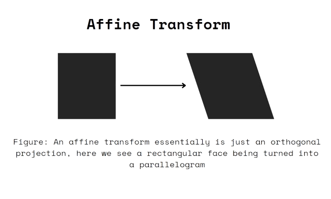
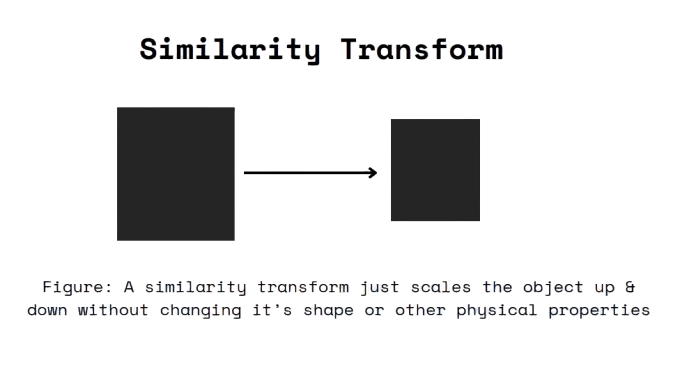
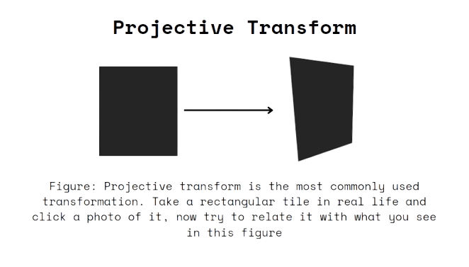

In robotics, especially in systems using Simultaneous Localization and Mapping (SLAM), a robot’s ability to navigate and understand its environment relies on an understanding of spatial 3D geometry, an example of which we saw in the previous blog where we discussed Visual-SLAM. At its core, SLAM allows a robot to map its surroundings while keeping track of its own position within that map. This is a crucial capability for autonomous systems like self-driving cars, drones, and even household robots. The robot has to understand how to move through space, recognize objects, and keep track of how its position and orientation change over time. To do this, the robot needs to use several important concepts from geometry, including Euclidean space, affine transformations, similarity transformations, perspective transformations, and methods for handling rotations using rotation matrices and quaternions. These geometric tools form the backbone of SLAM, allowing robots to build accurate maps and position themselves within those maps.
First, it’s important to establish the basic framework that robots use to understand space. This framework is called Euclidean space. Euclidean space is the familiar 3D environment where we live, and it is defined by three coordinates: x, y, and z. In Euclidean space, distances between points and angles between lines remain constant regardless of where you are or how you move. For instance, the distance between two walls in a room will remain the same whether you’re looking at it from one angle or another. This consistency is critical for SLAM because robots rely on these fixed relationships to build accurate maps. When a robot measures distances or angles between objects in a room, those measurements must remain reliable as the robot moves around. If the measurements changed unexpectedly, the map would be incorrect, and the robot could lose its position or fail to understand its environment. Thus, Euclidean space provides the stable foundation that SLAM needs to function.
However, working in Euclidean space alone is not enough for robots to understand and manipulate their environment. Robots also need to perform various transformations to adjust how they view and interact with objects. These transformations allow the robot to rotate, translate, scale, or distort objects as needed, depending on the robot’s movements or changes in perspective. One of the most important types of transformations is the affine transformation. Affine transformations extend beyond simple rotation and translation by allowing for scaling and shearing. For instance, scaling might occur when a robot adjusts the size of an object in its map, while shearing can happen when objects appear slanted or skewed. Affine transformations are useful because they give the robot more flexibility in representing real-world environments, which are often irregular and complex. Imagine a robot exploring a warehouse where some walls are perfectly vertical, while others may be slightly tilted. By using affine transformations, the robot can accurately map both types of walls and adjust its internal model to account for these variations.

Another useful transformation in SLAM is the similarity transformation. This type of transformation is particularly helpful when the robot needs to deal with both scaling and rotation at the same time. Similarity transformations allow for objects to be scaled while maintaining their relative shapes and orientations. For example, consider a robot moving from a large open space, such as a factory floor, into a smaller room. The robot needs to scale down its understanding of the space while still recognizing the relative positions of walls, doors, and other objects. This transformation ensures that the robot’s map remains accurate even when the size of the environment changes. Similarity transformations are especially useful for robots that explore large, multi-level environments, such as drones flying through warehouses or autonomous vehicles navigating through city streets.

When robots use cameras to gather visual data about their surroundings, they also need to apply perspective transformations. Cameras capture images in 2D, but robots operate in a 3D world. Perspective transformations help convert the 2D images that a camera sees into useful 3D information. For example, objects that are far away from the camera appear smaller, while objects that are closer appear larger. Without correcting for this perspective, a robot would struggle to understand how far away objects really are or how they are positioned relative to each other. Perspective transformations adjust the size and position of objects in the robot’s view to reflect their actual 3D locations. This is crucial for SLAM because it allows robots to interpret the visual data they gather and build accurate maps of their surroundings based on that data.

In addition to these transformations, robots also need to account for rotations as they move through space. One common way to represent rotations is through rotation matrices. A rotation matrix is a 3x3 matrix that can be used to rotate points in 3D space. For example, if a robot needs to turn to face a different direction, the rotation matrix will adjust the coordinates of points in the robot’s environment to reflect its new orientation. Rotation matrices are straightforward and easy to use, which makes them a popular choice in many robotics applications. However, rotation matrices can suffer from numerical errors over time. If a robot performs many consecutive rotations, small rounding errors can accumulate, causing the rotation matrix to lose its accuracy. This can lead to problems with the robot’s orientation or movement.
To address this issue, many robotic systems use quaternions to represent rotations. Quaternions are a set of four numbers—one real number and three imaginary numbers—that provide a compact and efficient way to handle rotations in 3D space. Unlike Euler angles, which can cause problems like gimbal lock (where the robot loses one of its rotational degrees of freedom), quaternions avoid these issues and allow for smooth, continuous rotations in any direction. Quaternions are particularly useful in systems where the robot needs to rotate frequently and in multiple directions, such as drones or robotic arms. Because they are less prone to numerical errors and can handle complex rotations without problems, quaternions are often preferred in SLAM systems that require high precision over long periods of time.
While these core concepts form the backbone of SLAM, there are additional tools and ideas that help make SLAM systems even more effective. One such concept is homogeneous coordinates, which add an extra dimension to standard Euclidean coordinates. Instead of representing a point in 3D space as (x, y, z), homogeneous coordinates use four coordinates: (x, y, z, w). This additional dimension simplifies the process of performing transformations, allowing for more efficient calculations when applying affine, similarity, or perspective transformations. Homogeneous coordinates are especially helpful when working with complex transformations, as they allow all transformations to be represented uniformly, which reduces the computational complexity involved. We will discuss the mathematics of these coordinates in the upcoming blogs in detail which will give a more intuitive understanding of what the transfarmations are actually doing.
That's it for this blog, thanks for reading and have a great day ahead!!